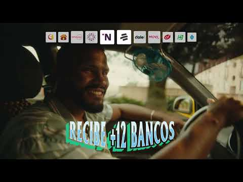

01 / Advertisement
A tu negocio le falta el QR Nequi
- Creator
- Nequi. Individual production credits are not listed on the video page.
- Date
- June 21, 2024.
- Course themes
- Representation · Identity
- Technology connection
- Digital payments and small businesses.

This Nequi advertisement promotes QR payments for small businesses. Its title tells viewers that their business is missing a Nequi QR code. The preview places the message in an everyday driving scene instead of a bank office. It presents digital payments as something that belongs in ordinary working life.
I chose the advertisement because it is a piece of Colombian consumer culture, not a study about it. The casual wording makes the product feel familiar. The message also creates pressure to keep up. A business without this payment option can start to seem behind. That is a marketing choice, not proof that every business needs the service.
This connects to Bermeo-Giraldo and colleagues’ research on fintech adoption. Their study considers social influence and perceived usefulness. The ad shows how a company tries to shape those perceptions. It also connects to Parra-Sánchez and colleagues’ work on smaller businesses adopting technology. The course themes are representation and identity. The ad invites everyday business owners to see themselves as digital entrepreneurs. Its claims describe the 2024 campaign, not guaranteed service terms today.
Related bibliography: Bermeo-Giraldo et al. (2023) · Parra-Sánchez et al. (2021)
Back to gallery list ↑